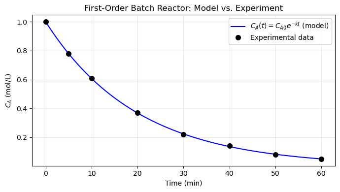
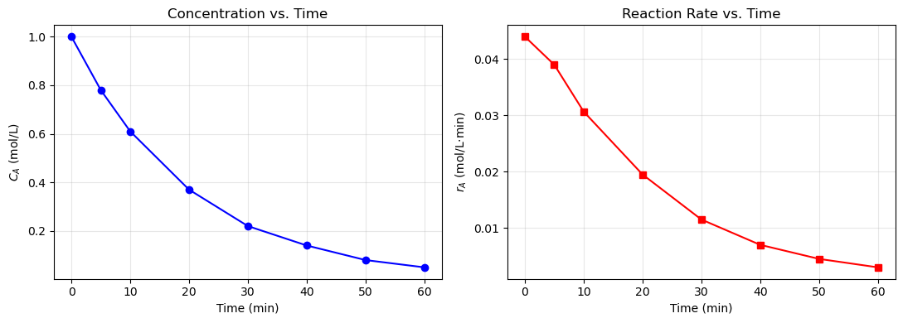
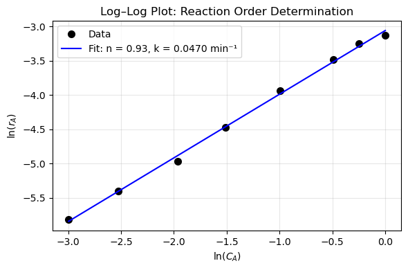
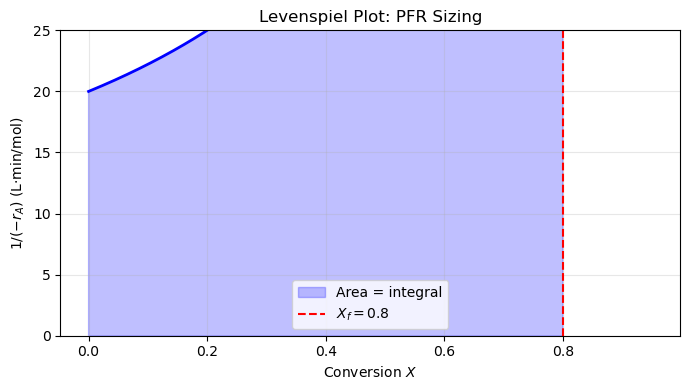
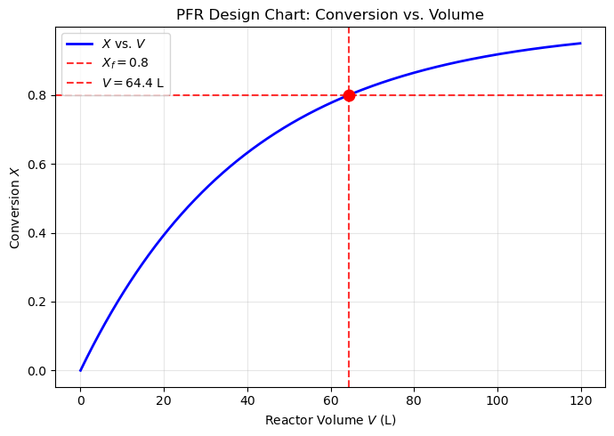
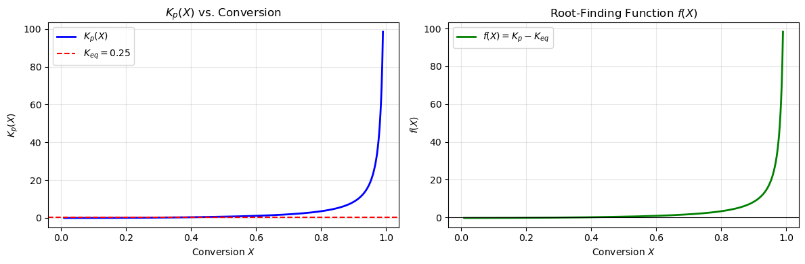
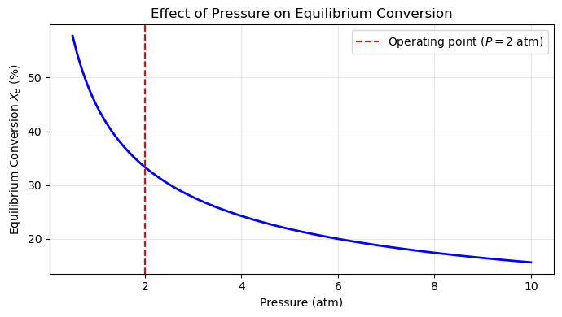
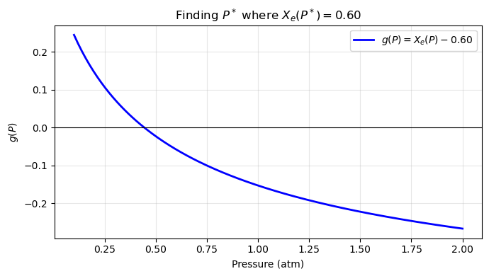

Homework 07: Differentiation, Integration, Root Finding, and Symbolic Math#
Release Date: Mar 29
Due Date: Apr 10 11:59 PM
Total Points: 100 pts (+ 15 pts bonus)
Instructions:
Complete all problems in this notebook
Show all your work with clear comments
Format all outputs professionally with units and labels
Test your code to ensure it runs without errors
Submission:
Submit this completed Jupyter notebook to Gradescope
Make sure all cells have been executed and outputs are visible
The Big Picture#
This homework follows a single chemical engineering story from start to finish.
You are designing a reactor system for the liquid-phase decomposition of species A:
The four problems build on each other:
Problem 1 — SymPy: Derive the rate law and Arrhenius temperature dependence symbolically
Problem 2 — Numerical Differentiation: Extract the reaction rate from experimental concentration data
Problem 3 — Numerical Integration: Size a plug flow reactor using the Levenspiel integral
Problem 4 — Root Finding: Find the equilibrium conversion under reversible conditions
By the end, you will have gone from raw experimental data all the way to a reactor design — using every numerical tool in your toolkit.
import numpy as np
import matplotlib.pyplot as plt
import sympy as sp
from scipy.integrate import quad, trapezoid, cumulative_trapezoid
from scipy.optimize import brentq, fsolve
sp.init_printing(use_unicode=True)
Problem 1 (25 points) — Symbolic Mathematics with SymPy#
Before running experiments, you want to set up the mathematical framework symbolically.
The reaction A → B + C follows a power-law rate: $\(-r_A = k \, C_A^n\)$
where \(n\) is the reaction order and \(k\) is the rate constant. The rate constant follows the Arrhenius equation: $\(k(T) = A_0 \, \exp\!\left(-\frac{E_a}{RT}\right)\)$
where \(A_0\) is the pre-exponential factor, \(E_a\) is the activation energy (J/mol), \(R = 8.314\) J/mol·K, and \(T\) is temperature in Kelvin.
a) (5 pts) Define the following SymPy symbols with appropriate assumptions, then build the symbolic expressions for \(-r_A\) and \(k(T)\). Print both expressions.
C_A,k_sym,n— all positiveA0,Ea,R_sym,T_sym— all positive
Print -r_A and k(T) using sp.pprint or just display them.
# Problem 1a — Define symbols and build expressions
C_A, k_sym, n = sp.symbols('C_A k n', positive=True)
A0, Ea, R_sym, T_sym = sp.symbols('A_0 E_a R T', positive=True)
k_T = A0 * sp.exp(-Ea / (R_sym * T_sym))
r_A = k_sym * C_A**n
print("Rate law -r_A =")
sp.pprint(r_A)
print("\nArrhenius k(T) =")
sp.pprint(k_T)
Rate law -r_A =
n
C_A ⋅k
Arrhenius k(T) =
-Eₐ
────
R⋅T
A₀⋅ℯ
b) (5 pts) Compute the following derivatives symbolically and print each result:
\(\dfrac{d(-r_A)}{dC_A}\) — how does the rate change with concentration?
\(\dfrac{dk}{dT}\) — how does the rate constant change with temperature? (substitute \(k(T)\) into the rate law first)
\(\dfrac{d^2 k}{dT^2}\) — the second derivative of \(k\) with respect to \(T\)
For the last two, substitute the Arrhenius expression for \(k\) so the result is in terms of \(A_0\), \(E_a\), \(R\), \(T\).
# Problem 1b — Symbolic derivatives
dr_dCA = sp.diff(r_A, C_A)
print("d(-r_A)/dC_A =")
sp.pprint(dr_dCA)
# Substitute Arrhenius k(T) into rate law for T-derivatives
r_A_T = r_A.subs(k_sym, k_T)
dk_dT = sp.diff(k_T, T_sym)
print("\ndk/dT =")
sp.pprint(sp.simplify(dk_dT))
d2k_dT2 = sp.diff(k_T, T_sym, 2)
print("\nd²k/dT² =")
sp.pprint(sp.simplify(d2k_dT2))
d(-r_A)/dC_A =
n
C_A ⋅k⋅n
────────
C_A
dk/dT =
-Eₐ
────
R⋅T
A₀⋅Eₐ⋅ℯ
───────────
2
R⋅T
d²k/dT² =
-Eₐ
────
R⋅T
A₀⋅Eₐ⋅(Eₐ - 2⋅R⋅T)⋅ℯ
────────────────────────
2 4
R ⋅T
c) (8 pts) The batch reactor design equation for a constant-volume, liquid-phase system is:
Use sp.dsolve to solve this ODE symbolically for \(C_A(t)\).
Define
C_A_fn = sp.Function('C_A')as the unknown function of timetWrite the ODE as a SymPy
EqobjectCall
sp.dsolveand print the general solution
Then apply the initial condition \(C_A(0) = C_{A0}\) (define C_A0 = sp.Symbol('C_{A0}', positive=True)) to eliminate the integration constant and print the particular solution.
Hint: After calling dsolve, use .rhs.subs(t, 0) - C_A0 = 0 to solve for the constant C1, then substitute it back.
# Problem 1c — Symbolic ODE solution
t = sp.Symbol('t', positive=True)
C_A_fn = sp.Function('C_A')
C_A0 = sp.Symbol('C_{A0}', positive=True)
ode = sp.Eq(C_A_fn(t).diff(t), -k_sym * C_A_fn(t)**n)
raw_sol = sp.dsolve(ode, C_A_fn(t))
# dsolve may return a list of branches when n is symbolic; take the first
general_sol = raw_sol[0] if isinstance(raw_sol, list) else raw_sol
print("General solution:")
sp.pprint(general_sol)
# Apply IC: C_A(0) = C_A0
C1 = sp.Symbol('C1')
ic_eq = general_sol.rhs.subs(t, 0) - C_A0
C1_val = sp.solve(ic_eq, C1)[0]
particular_sol = general_sol.subs(C1, C1_val)
print("\nParticular solution (C_A(0) = C_A0):")
sp.pprint(particular_sol)
General solution:
⎧ -1
⎪ ─────
⎪ n - 1
C_A(t) = ⎨(-C₁⋅n + C₁ + k⋅n⋅t - k⋅t) for n ≠ 1
⎪
⎪ nan otherwise
⎩
Particular solution (C_A(0) = C_A0):
⎧ ↪
⎪ ↪
⎪ ↪
⎪⎛ ⎛⎧ 1 - n ⎞ ⎛⎧ 1 - n ↪
⎪⎜ ⎜⎪-C_{A0} ⎟ ⎜⎪-C_{A0} ↪
⎪⎜ ⎜⎪───────────── for n ≠ 1⎟ ⎜⎪───────────── for ↪
C_A(t) = ⎨⎜k⋅n⋅t - k⋅t - n⋅⎜⎨ n - 1 ⎟ + ⎜⎨ n - 1 ↪
⎪⎜ ⎜⎪ ⎟ ⎜⎪ ↪
⎪⎜ ⎜⎪ nan otherwise⎟ ⎜⎪ nan othe ↪
⎪⎝ ⎝⎩ ⎠ ⎝⎩ ↪
⎪ ↪
⎪ nan ↪
⎩ ↪
↪ -1
↪ ─────
↪ n - 1
↪ ⎞⎞
↪ ⎟⎟
↪ n ≠ 1⎟⎟
↪ ⎟⎟ for n ≠ 1
↪ ⎟⎟
↪ rwise⎟⎟
↪ ⎠⎠
↪
↪ otherwise
↪
d) (7 pts) Use sp.lambdify to convert the particular solution \(C_A(t)\) (for the special case \(n = 1\), which gives \(C_A(t) = C_{A0} e^{-kt}\)) into a numerical function, then plot it.
Use these numerical values: \(C_{A0} = 1.0\) mol/L, \(k = 0.05\) min\(^{-1}\), \(t \in [0, 60]\) min.
Plot \(C_A(t)\) vs. \(t\) with proper labels and title
On the same plot, overlay the points from the experimental data below (use markers, no line):
t_exp = np.array([0, 5, 10, 20, 30, 40, 50, 60]) # min
C_exp = np.array([1.00, 0.78, 0.61, 0.37, 0.22, 0.14, 0.08, 0.05]) # mol/L
Do the experimental points follow the first-order curve? Comment in one sentence.
# Problem 1d — lambdify and plot first-order solution
t_exp = np.array([0, 5, 10, 20, 30, 40, 50, 60]) # min
C_exp = np.array([1.00, 0.78, 0.61, 0.37, 0.22, 0.14, 0.08, 0.05]) # mol/L
# Build first-order solution C_A(t) = C_A0 * exp(-k*t) symbolically
t_sym = sp.Symbol('t', positive=True)
k_num = sp.Symbol('k', positive=True)
CA0_sym = sp.Symbol('C_A0', positive=True)
expr_1st = CA0_sym * sp.exp(-k_num * t_sym)
CA_func = sp.lambdify((t_sym, CA0_sym, k_num), expr_1st, 'numpy')
t_plot = np.linspace(0, 60, 300)
C_plot = CA_func(t_plot, 1.0, 0.05)
fig, ax = plt.subplots(figsize=(7, 4))
ax.plot(t_plot, C_plot, 'b-', label=r'$C_A(t) = C_{A0}e^{-kt}$ (model)')
ax.plot(t_exp, C_exp, 'ko', markersize=7, label='Experimental data')
ax.set_xlabel('Time (min)')
ax.set_ylabel('$C_A$ (mol/L)')
ax.set_title('First-Order Batch Reactor: Model vs. Experiment')
ax.legend()
ax.grid(True, alpha=0.3)
plt.tight_layout()
plt.show()

Comment: Yes, the experimental points closely follow the first-order exponential decay curve \(C_A = C_{A0}e^{-kt}\) with \(k = 0.05\) min\(^{-1}\), confirming that the reaction is first-order in A.
Problem 2 (25 points) — Numerical Differentiation#
You run a batch reactor experiment and record the concentration of A at discrete time points. Your goal is to extract the reaction rate at each time point using np.gradient, and then verify that the reaction is indeed first-order.
t_data = np.array([0, 5, 10, 20, 30, 40, 50, 60]) # min
C_data = np.array([1.00, 0.78, 0.61, 0.37, 0.22, 0.14, 0.08, 0.05]) # mol/L
Recall: the rate of disappearance of A is \(r_A = -dC_A/dt\) (always positive for a consuming reaction).
a) (8 pts) Compute the reaction rate \(r_A = -dC_A/dt\) at each time point using np.gradient.
Print a formatted table with columns: \(t\) (min), \(C_A\) (mol/L), \(r_A\) (mol/L·min)
Plot \(C_A\) vs. \(t\) and \(r_A\) vs. \(t\) as two side-by-side subplots, both with labeled axes and titles
Important: Always pass t_data as the second argument to np.gradient. If you omit it, NumPy assumes unit spacing (\(\Delta t = 1\)) and the rates will be wrong by a factor of 5.
# Problem 2a — Numerical differentiation with np.gradient
t_data = np.array([0, 5, 10, 20, 30, 40, 50, 60]) # min
C_data = np.array([1.00, 0.78, 0.61, 0.37, 0.22, 0.14, 0.08, 0.05]) # mol/L
dC_dt = np.gradient(C_data, t_data)
r_A_data = -dC_dt # rate is positive
print(f"{'t (min)':>10} {'C_A (mol/L)':>14} {'r_A (mol/L·min)':>18}")
print("-" * 45)
for t_i, C_i, r_i in zip(t_data, C_data, r_A_data):
print(f"{t_i:>10.1f} {C_i:>14.4f} {r_i:>18.5f}")
fig, (ax1, ax2) = plt.subplots(1, 2, figsize=(11, 4))
ax1.plot(t_data, C_data, 'bo-', markersize=6)
ax1.set_xlabel('Time (min)')
ax1.set_ylabel('$C_A$ (mol/L)')
ax1.set_title('Concentration vs. Time')
ax1.grid(True, alpha=0.3)
ax2.plot(t_data, r_A_data, 'rs-', markersize=6)
ax2.set_xlabel('Time (min)')
ax2.set_ylabel('$r_A$ (mol/L·min)')
ax2.set_title('Reaction Rate vs. Time')
ax2.grid(True, alpha=0.3)
plt.tight_layout()
plt.show()
t (min) C_A (mol/L) r_A (mol/L·min)
---------------------------------------------
0.0 1.0000 0.04400
5.0 0.7800 0.03900
10.0 0.6100 0.03067
20.0 0.3700 0.01950
30.0 0.2200 0.01150
40.0 0.1400 0.00700
50.0 0.0800 0.00450
60.0 0.0500 0.00300

b) (10 pts) To confirm the reaction order, take the logarithm of both sides of the rate law:
This means a log–log plot of \(r_A\) vs. \(C_A\) should be a straight line with slope \(n\) and intercept \(\ln(k)\).
Plot \(\ln(r_A)\) vs. \(\ln(C_A)\) using the values from part (a)
Fit a line through the points using
np.polyfit(np.log(C_data), np.log(r_A), 1)and overlay the fitExtract and print the estimated reaction order \(n\) (slope) and rate constant \(k\) (from the intercept)
Label the axes as \(\ln(C_A)\) and \(\ln(r_A)\), and include the fitted \(n\) and \(k\) in the legend or title
Hint: The intercept of the fit is \(\ln(k)\), so \(k = e^{\text{intercept}}\).
# Problem 2b — Log-log plot and reaction order determination
coeffs = np.polyfit(np.log(C_data), np.log(r_A_data), 1)
n_fit = coeffs[0]
k_fit = np.exp(coeffs[1])
print(f"Estimated reaction order n = {n_fit:.3f}")
print(f"Estimated rate constant k = {k_fit:.4f} min⁻¹")
ln_C_fit = np.linspace(np.log(C_data.min()), np.log(C_data.max()), 100)
ln_r_fit = np.polyval(coeffs, ln_C_fit)
fig, ax = plt.subplots(figsize=(6, 4))
ax.plot(np.log(C_data), np.log(r_A_data), 'ko', markersize=7, label='Data')
ax.plot(ln_C_fit, ln_r_fit, 'b-',
label=f'Fit: n = {n_fit:.2f}, k = {k_fit:.4f} min⁻¹')
ax.set_xlabel('$\\ln(C_A)$')
ax.set_ylabel('$\\ln(r_A)$')
ax.set_title('Log–Log Plot: Reaction Order Determination')
ax.legend()
ax.grid(True, alpha=0.3)
plt.tight_layout()
plt.show()
Estimated reaction order n = 0.929
Estimated rate constant k = 0.0470 min⁻¹

c) (7 pts) np.gradient uses different finite-difference formulas at different points in the array — central differences at interior points, and one-sided (forward/backward) differences at the endpoints.
Answer the following in the markdown cell below:
At which indices does
np.gradientuse the forward difference formula? Write out that formula explicitly using \(C_A\) and \(t\) notation.At which indices does it use the backward difference formula? Write that formula too.
At which indices does it use the central difference formula?
The central difference is called “second-order accurate” while forward/backward are “first-order accurate.” What does this mean in terms of how the error changes as you add more data points?
Answer:
np.gradient uses the following finite-difference formulas:
Forward difference (index 0, the first point): $\(\frac{dC_A}{dt}\bigg|_{i=0} \approx \frac{C_A(t_1) - C_A(t_0)}{t_1 - t_0}\)$
Backward difference (index \(N-1\), the last point): $\(\frac{dC_A}{dt}\bigg|_{i=N-1} \approx \frac{C_A(t_{N-1}) - C_A(t_{N-2})}{t_{N-1} - t_{N-2}}\)$
Central difference (all interior indices \(1 \le i \le N-2\)): $\(\frac{dC_A}{dt}\bigg|_{i} \approx \frac{C_A(t_{i+1}) - C_A(t_{i-1})}{t_{i+1} - t_{i-1}}\)$
Accuracy: “Second-order accurate” means the truncation error of the central difference scales as \((\Delta t)^2\) — halving the spacing reduces the error by a factor of 4. “First-order accurate” (forward/backward) means the error scales as \(\Delta t\), so halving the spacing only halves the error. In practice, adding more data points shrinks the interior spacing and rapidly improves the central-difference estimates, while the two endpoint estimates improve more slowly.
Problem 3 (25 points) — Numerical Integration: PFR Sizing#
Now that you have confirmed first-order kinetics (\(n \approx 1\), \(k \approx 0.05\) min\(^{-1}\)), you want to design a plug flow reactor (PFR) to process a continuous feed stream.
The PFR design equation is the Levenspiel integral:
For a first-order, liquid-phase reaction with \(C_A = C_{A0}(1-X)\): $\(-r_A(X) = k \, C_{A0}(1-X)\)$
so the Levenspiel integrand is: $\(\frac{1}{-r_A} = \frac{1}{k \, C_{A0}(1-X)}\)$
Process parameters:
Parameter |
Value |
|---|---|
Rate constant \(k\) |
0.05 min\(^{-1}\) |
Inlet concentration \(C_{A0}\) |
1.0 mol/L |
Molar feed rate \(F_{A0}\) |
2.0 mol/min |
Target conversion \(X_f\) |
80% |
a) (5 pts) Define the Levenspiel integrand as a Python function and plot it for \(X \in [0, 0.95]\).
Label axes: \(X\) on x-axis, \(1/(-r_A)\) (L·min/mol) on y-axis
Shade the area under the curve from \(X = 0\) to \(X = X_f = 0.8\) using
ax.fill_betweenAdd a vertical dashed line at \(X_f = 0.8\) and label it
What happens to the integrand as \(X \to 1\)? Add a one-sentence observation below the plot in a markdown cell.
# Problem 3a — Levenspiel integrand plot
k = 0.05 # min^-1
C_A0 = 1.0 # mol/L
F_A0 = 2.0 # mol/min
X_f = 0.80
def levenspiel(X):
return 1.0 / (k * C_A0 * (1 - X))
X_plot = np.linspace(0, 0.95, 500)
fig, ax = plt.subplots(figsize=(7, 4))
ax.plot(X_plot, levenspiel(X_plot), 'b-', linewidth=2)
X_fill = np.linspace(0, X_f, 300)
ax.fill_between(X_fill, levenspiel(X_fill), alpha=0.25, color='blue', label='Area = integral')
ax.axvline(X_f, color='red', linestyle='--', label=f'$X_f = {X_f}$')
ax.set_xlabel('Conversion $X$')
ax.set_ylabel('$1/(-r_A)$ (L·min/mol)')
ax.set_title('Levenspiel Plot: PFR Sizing')
ax.set_ylim(0, 25)
ax.legend()
ax.grid(True, alpha=0.3)
plt.tight_layout()
plt.show()

Observation: As \(X \to 1\), the Levenspiel integrand \(1/(-r_A) = 1/[k C_{A0}(1-X)]\) diverges to infinity because the reaction rate goes to zero and an infinite reactor volume would be required to reach complete conversion.
b) (10 pts) Compute the PFR volume \(V = F_{A0} \int_0^{X_f} \frac{dX}{-r_A}\) using two numerical integration methods and compare them.
Method 1 — Trapezoidal rule (scipy.integrate.trapezoid):
Evaluate the Levenspiel integrand at \(N = 5\) evenly-spaced conversion values from 0 to \(X_f\)
Compute the integral using
trapezoid(y, x)and multiply by \(F_{A0}\)
Method 2 — Adaptive quadrature (scipy.integrate.quad):
Compute the integral to near-machine precision using
quad(levenspiel, 0, X_f)Multiply by \(F_{A0}\)
For this first-order reaction, the exact analytical answer is: $\(V_{\text{exact}} = \frac{F_{A0}}{k C_{A0}} \ln\!\left(\frac{1}{1-X_f}\right)\)$
Print all three results (trapezoid, quad, exact) and the absolute error of each numerical method relative to the exact answer.
# Problem 3b — Compare trapezoid, quad, and exact
# Method 1: Trapezoidal rule with N=5 points
X_trap = np.linspace(0, X_f, 5)
V_trap = F_A0 * trapezoid(levenspiel(X_trap), X_trap)
# Method 2: Adaptive quadrature
integral_quad, _ = quad(levenspiel, 0, X_f)
V_quad = F_A0 * integral_quad
# Exact analytical answer
V_exact = (F_A0 / (k * C_A0)) * np.log(1 / (1 - X_f))
print(f"{'Method':<20} {'Volume (L)':>12} {'|Error| (L)':>14}")
print("-" * 48)
print(f"{'Trapezoidal (N=5)':<20} {V_trap:>12.4f} {abs(V_trap - V_exact):>14.4f}")
print(f"{'Quad (adaptive)':<20} {V_quad:>12.4f} {abs(V_quad - V_exact):>14.2e}")
print(f"{'Exact analytical':<20} {V_exact:>12.4f} {'—':>14}")
Method Volume (L) |Error| (L)
------------------------------------------------
Trapezoidal (N=5) 67.3333 2.9558
Quad (adaptive) 64.3775 5.68e-14
Exact analytical 64.3775 —
c) (10 pts) Build a reactor design chart — conversion vs. volume — using cumulative_trapezoid.
Evaluate the Levenspiel integrand on a fine grid of 500 conversion values from 0 to 0.95
Use
cumulative_trapezoid(integrand, X_arr, initial=0)to get a running integral \(\int_0^X \frac{dX'}{-r_A}\)Multiply by \(F_{A0}\) to get the required volume \(V(X)\) at each conversion
Then plot:
\(X\) (y-axis) vs. \(V\) (x-axis), with labeled axes and a title
A red dashed horizontal line at \(X_f = 0.80\)
A red dashed vertical line at the corresponding volume \(V(X_f)\)
A red dot at the intersection point
Finally, read off and print the volume required for \(X = 0.60\), \(0.80\), and \(0.90\) from the chart. Use np.interp or index the arrays directly.
# Problem 3c — Reactor design chart using cumulative_trapezoid
X_arr = np.linspace(0, 0.95, 500)
integrand_arr = levenspiel(X_arr)
cum_int = cumulative_trapezoid(integrand_arr, X_arr, initial=0)
V_arr = F_A0 * cum_int
# Read off volumes at specific conversions
for X_target in [0.60, 0.80, 0.90]:
V_target = np.interp(X_target, X_arr, V_arr)
print(f"V required for X = {X_target:.2f}: {V_target:.2f} L")
# Volume at X_f = 0.80 for the plot marker
V_at_Xf = np.interp(X_f, X_arr, V_arr)
fig, ax = plt.subplots(figsize=(7, 5))
ax.plot(V_arr, X_arr, 'b-', linewidth=2, label='$X$ vs. $V$')
ax.axhline(X_f, color='red', linestyle='--', alpha=0.8, label=f'$X_f = {X_f}$')
ax.axvline(V_at_Xf, color='red', linestyle='--', alpha=0.8, label=f'$V = {V_at_Xf:.1f}$ L')
ax.plot(V_at_Xf, X_f, 'ro', markersize=9, zorder=5)
ax.set_xlabel('Reactor Volume $V$ (L)')
ax.set_ylabel('Conversion $X$')
ax.set_title('PFR Design Chart: Conversion vs. Volume')
ax.legend()
ax.grid(True, alpha=0.3)
plt.tight_layout()
plt.show()
V required for X = 0.60: 36.65 L
V required for X = 0.80: 64.38 L
V required for X = 0.90: 92.11 L

Problem 4 (25 points) — Root Finding: Equilibrium Conversion#
In practice, the decomposition A → B + C is reversible:
At equilibrium, the forward and reverse rates balance. Starting from pure A (\(y_A = 1\), \(y_B = y_C = 0\)) and letting \(X\) be the fractional conversion of A, the mole fractions at equilibrium are:
The equilibrium condition at constant \(T\) and \(P\) is:
with \(K_{eq} = 0.25\) at the operating temperature and \(P = 2\) atm.
Your goal: Find the equilibrium conversion \(X_e\) by solving \(f(X) = K_p(X) - K_{eq} = 0\).
a) (7 pts) Define \(K_p(X)\) and \(f(X) = K_p(X) - K_{eq}\) as Python functions. Plot both:
Left subplot: \(K_p(X)\) vs. \(X\) for \(X \in [0.01, 0.99]\), with a horizontal dashed line at \(K_{eq} = 0.25\). Label axes and add a legend.
Right subplot: \(f(X) = K_p(X) - K_{eq}\) vs. \(X\). Draw a horizontal line at \(f = 0\). This plot is used to visually locate the bracket for
brentq.
From the plots, identify an interval \([a, b]\) such that \(f(a) < 0\) and \(f(b) > 0\) (or vice versa). State this bracket below the plots in a markdown cell.
# Problem 4a — Define K_p(X) and f(X), plot both
Keq = 0.25
P = 2.0 # atm
def K_p(X, P_val=P):
return (X / (1 + X))**2 / ((1 - X) / (1 + X)) * P_val
def f_equil(X, P_val=P):
return K_p(X, P_val) - Keq
X_range = np.linspace(0.01, 0.99, 500)
fig, (ax1, ax2) = plt.subplots(1, 2, figsize=(12, 4))
ax1.plot(X_range, K_p(X_range), 'b-', linewidth=2, label='$K_p(X)$')
ax1.axhline(Keq, color='red', linestyle='--', label=f'$K_{{eq}} = {Keq}$')
ax1.set_xlabel('Conversion $X$')
ax1.set_ylabel('$K_p(X)$')
ax1.set_title('$K_p(X)$ vs. Conversion')
ax1.legend()
ax1.grid(True, alpha=0.3)
ax2.plot(X_range, f_equil(X_range), 'g-', linewidth=2, label='$f(X) = K_p - K_{eq}$')
ax2.axhline(0, color='k', linestyle='-', linewidth=0.8)
ax2.set_xlabel('Conversion $X$')
ax2.set_ylabel('$f(X)$')
ax2.set_title('Root-Finding Function $f(X)$')
ax2.legend()
ax2.grid(True, alpha=0.3)
plt.tight_layout()
plt.show()

Bracket: From the \(f(X)\) plot, \(f(0.01) < 0\) and \(f(0.99) > 0\); a convenient bracket is \([0.01, 0.99]\) — verified: \(f(0.01) \approx -0.25 < 0\) and \(f(0.99) \gg 0 > 0\).
b) (10 pts) Find the equilibrium conversion using scipy.optimize.brentq.
Call
brentq(f_equil, a, b)with your bracket from part (a)Print the equilibrium conversion \(X_e\) and verify by printing \(f(X_e)\) (should be \(\approx 0\))
Print the equilibrium mole fractions \(y_A\), \(y_B\), \(y_C\)
Print a check: does \(y_A + y_B + y_C = 1\)? (it should)
Then compare \(X_e\) to the 80% conversion target from Problem 3. In one sentence, explain what this means for the reactor design: can you actually reach 80% conversion in a simple PFR without a recycle?
# Problem 4b — brentq root finding
X_eq = brentq(f_equil, 0.01, 0.99)
print(f"Equilibrium conversion X_e = {X_eq:.4f} ({X_eq*100:.2f}%)")
print(f"Verification f(X_e) = {f_equil(X_eq):.2e} (≈ 0 ✓)")
y_A = (1 - X_eq) / (1 + X_eq)
y_B = X_eq / (1 + X_eq)
y_C = X_eq / (1 + X_eq)
print(f"\nEquilibrium mole fractions:")
print(f" y_A = {y_A:.4f}")
print(f" y_B = {y_B:.4f}")
print(f" y_C = {y_C:.4f}")
print(f" y_A + y_B + y_C = {y_A + y_B + y_C:.6f} (= 1 ✓)")
print(f"\nTarget conversion (Problem 3): X_f = 0.80 ({80:.0f}%)")
print(f"Equilibrium conversion: X_e = {X_eq:.4f} ({X_eq*100:.2f}%)")
Equilibrium conversion X_e = 0.3333 (33.33%)
Verification f(X_e) = -5.55e-17 (≈ 0 ✓)
Equilibrium mole fractions:
y_A = 0.5000
y_B = 0.2500
y_C = 0.2500
y_A + y_B + y_C = 1.000000 (= 1 ✓)
Target conversion (Problem 3): X_f = 0.80 (80%)
Equilibrium conversion: X_e = 0.3333 (33.33%)
Design implication: Since the equilibrium conversion \(X_e \approx 33\%\) is well below the 80% target, thermodynamics prevents a simple single-pass PFR from ever reaching 80% conversion at \(P = 2\) atm — a recycle loop, product removal, or operation at higher pressure would be required.
c) (8 pts) How does the equilibrium conversion change with pressure? According to Le Chatelier’s principle, increasing pressure shifts A ⇌ B + C toward the side with fewer moles. Since the forward reaction produces 2 moles from 1 mole, increasing pressure should suppress \(X_e\).
Loop over
pressures = np.linspace(0.5, 10.0, 100)atmFor each pressure, define a new \(f(X)\) using that \(P\) value and solve with
brentqPlot \(X_e\) (%) vs. \(P\) (atm) with labeled axes and a title
Mark the operating point (\(P = 2\) atm) with a vertical dashed line
Does the trend match Le Chatelier’s principle? State yes or no and explain in one sentence.
# Problem 4c — Equilibrium conversion vs. pressure
pressures = np.linspace(0.5, 10.0, 100) # atm
X_eq_list = []
for P_val in pressures:
X_e = brentq(lambda X: f_equil(X, P_val), 0.001, 0.999)
X_eq_list.append(X_e * 100) # convert to %
fig, ax = plt.subplots(figsize=(7, 4))
ax.plot(pressures, X_eq_list, 'b-', linewidth=2)
ax.axvline(2.0, color='red', linestyle='--', label='Operating point ($P = 2$ atm)')
ax.set_xlabel('Pressure (atm)')
ax.set_ylabel('Equilibrium Conversion $X_e$ (%)')
ax.set_title('Effect of Pressure on Equilibrium Conversion')
ax.legend()
ax.grid(True, alpha=0.3)
plt.tight_layout()
plt.show()

Le Chatelier check: Yes, the trend matches Le Chatelier’s principle — increasing pressure suppresses the equilibrium conversion because A → B + C produces two moles from one, so higher pressure favors the reverse (fewer-mole) direction.
Bonus Problem (15 points) — Connecting Everything: The Optimal Operating Pressure#
You now have all the pieces to address a real design question:
At what pressure \(P^*\) does the equilibrium conversion \(X_e(P)\) equal exactly 60%?
If \(X_e < 0.60\), you can never reach 60% conversion no matter how large the reactor is. If \(X_e > 0.60\), a finite PFR can in principle achieve it. The crossover pressure \(P^*\) is where \(X_e(P^*) = 0.60\).
This means solving:
But \(X_e(P)\) is itself defined implicitly by \(K_p(X_e, P) = K_{eq}\) — so this is a nested root-finding problem: an outer root-finder over \(P\) that calls an inner root-finder to evaluate \(X_e(P)\).
a) (5 pts) Write a function X_eq(P_val) that:
Takes a pressure value
P_valUses
brentqinternally to solve \(K_p(X, P_{\text{val}}) = K_{eq}\) for \(X\)Returns the equilibrium conversion
Verify your function: print X_eq(2.0) — it should match the result from Problem 4b.
b) (5 pts) Define \(g(P) = X_{eq}(P) - 0.60\) and find \(P^*\) using brentq.
Plot \(g(P)\) vs. \(P\) over a sensible range to identify a bracket where \(g\) changes sign
Solve for \(P^*\) and print it in atm
Verify: print \(X_{eq}(P^*)\) and confirm it is \(\approx 0.60\)
c) (5 pts) Compute the PFR volume required to reach \(X = 0.60\) at \(P = P^*\) using quad (use the same \(k\), \(C_{A0}\), \(F_{A0}\) from Problem 3).
Then write 3–4 sentences answering: What is \(P^*\), and what does it mean physically? Is operating at \(P^*\) desirable from a process engineering standpoint, and what trade-offs would you consider?
# Bonus part (a) — nested root finder
def X_eq_fn(P_val):
return brentq(lambda X: K_p(X, P_val) - Keq, 0.001, 0.999)
print(f"X_eq(2.0) = {X_eq_fn(2.0):.4f} (should match Problem 4b: {X_eq:.4f} ✓)")
X_eq(2.0) = 0.3333 (should match Problem 4b: 0.3333 ✓)
# Bonus part (b) — find P*
def g_P(P_val):
return X_eq_fn(P_val) - 0.60
P_scan = np.linspace(0.1, 2.0, 200)
g_scan = [g_P(p) for p in P_scan]
fig, ax = plt.subplots(figsize=(7, 4))
ax.plot(P_scan, g_scan, 'b-', linewidth=2, label='$g(P) = X_e(P) - 0.60$')
ax.axhline(0, color='k', linewidth=0.8)
ax.set_xlabel('Pressure (atm)')
ax.set_ylabel('$g(P)$')
ax.set_title('Finding $P^*$ where $X_e(P^*) = 0.60$')
ax.legend()
ax.grid(True, alpha=0.3)
plt.tight_layout()
plt.show()
# g changes sign between 0.1 and 2.0
P_star = brentq(g_P, 0.1, 2.0)
print(f"P* = {P_star:.4f} atm")
print(f"Verification: X_eq(P*) = {X_eq_fn(P_star):.4f} (≈ 0.60 ✓)")

P* = 0.4444 atm
Verification: X_eq(P*) = 0.6000 (≈ 0.60 ✓)
# Bonus part (c) — PFR volume at P* for X = 0.60
X_target_bonus = 0.60
integral_bonus, _ = quad(levenspiel, 0, X_target_bonus)
V_bonus = F_A0 * integral_bonus
print(f"PFR volume required for X = {X_target_bonus} at P* = {P_star:.3f} atm: {V_bonus:.2f} L")
PFR volume required for X = 0.6 at P* = 0.444 atm: 36.65 L
Discussion:
\(P^*\) is the minimum pressure at which the thermodynamic equilibrium allows the reaction to reach exactly 60% conversion; at any pressure below \(P^*\), the reaction is equilibrium-limited before 60% is achieved, so no finite reactor can get there. Physically, lowering pressure shifts the equilibrium toward products (because A → B + C increases the number of moles), so operating at \(P^*\) is a deliberate trade-off: a lower pressure increases the thermodynamically attainable conversion.
However, operating at \(P^*\) (a low pressure) is not necessarily desirable from a process engineering standpoint. Lower pressure means lower reactant partial pressures and therefore lower reaction rates, requiring a larger (and more expensive) reactor to achieve the same throughput. Additionally, maintaining sub-atmospheric pressures requires vacuum equipment, which adds capital and operating costs and introduces safety considerations around air in-leakage. In practice, an engineer would balance reactor size, equipment costs, safety constraints, and downstream separation costs to choose an operating pressure above \(P^*\) that gives a practical conversion rate.
Point Distribution#
Problem |
Sub-parts |
Total |
|---|---|---|
Problem 1 — SymPy |
a) 5 + b) 5 + c) 8 + d) 7 |
25 pts |
Problem 2 — Numerical Differentiation |
a) 8 + b) 10 + c) 7 |
25 pts |
Problem 3 — Numerical Integration |
a) 5 + b) 10 + c) 10 |
25 pts |
Problem 4 — Root Finding |
a) 7 + b) 10 + c) 8 |
25 pts |
Bonus — Nested Root Finding |
a) 5 + b) 5 + c) 5 |
15 pts |
Total (without bonus) |
100 pts |
|
Total (with bonus) |
115 pts |
Good luck!